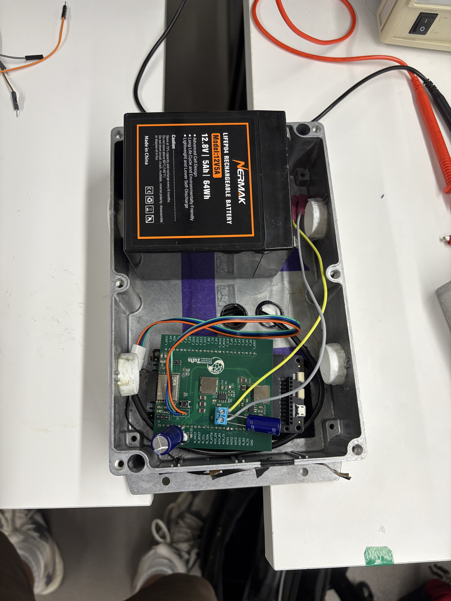

Malawi Water Tank Level Tracker
Engineers Without Borders @ Tufts - Custom PCB

Project Summary
This project is for the community we partner with in Malawi through Tufts Engineers Without Borders. With Andrew Schretzmayer, we led the design of a device that measures the water level in a tank and sends the data to the United States for remote monitoring over cellular. What began as a breadboard prototype has since been redesigned into a custom 4 layer PCB, a battery powered ESP32-C3 microcontroller and Blues cellular module on a single board, engineered for long-term, unattended deployment in the field.


From Prototype to Custom PCB
The first working version of this system lived on a breadboard: an ESP32-C3 dev kit wired to an ultrasonic sensor, a Blues Notecard on its Notecarrier, and an SD card module for local storage. That prototype proved the concept—take a reading, store it, and upload over cellular—but it was fragile, bulky, and not something you could leave running unattended in Malawi for months. The next step was to consolidate everything into a single, robust, purpose-built board.
Original (Breadboard Prototype)

- ESP32-C3 dev kit + jumper wires
- Separate SD card module for storage
- Notecarrier dev board for cellular
- Great for iteration, not for deployment
Current (Custom PCB)

- Single 70 × 74 mm 4-layer board
- On-board power regulation and storage
- Integrated connectors for sensor, battery, and Notecard
- Designed for unattended, long-term operation
PCB Design
The board was designed from scratch in KiCad as a four-layer stackup: signal layers on top and bottom, with two internal ground planes that sit directly beneath the switching regulators. Those ground planes keep return paths short and quiet—important because the cellular modem and the buck converters are both noisy, and the ESP32-C3's radio is sensitive. The board carries the microcontroller, dual power supplies, the cellular interface, and all field connectors on a single footprint roughly the size of a credit card.

Power Subsystem
- 12.8V LiFePO4 battery input
- Dual AP64500 synchronous buck converters
- Independent 5V (Notecard) and 3.3V (ESP32) rails
- Bulk capacitance to ride through cellular current bursts
Timekeeping & Sleep
- External 32.768 kHz crystal for an accurate RTC
- Deep sleep between hourly readings (~microamps)
- Readings held in RTC memory across sleep cycles
How It Works
Data Collection
- Ultrasonic sensor measures tank water level
- ESP32-C3 wakes and takes a reading once per hour
- Readings stored in RTC memory through deep sleep
Data Transmission
- Once a day, the day's readings are sent to the Blues Notecard
- Cellular upload to Blues Notehub
- Routed to our endpoint for remote monitoring in the U.S.
Why Blues?
We chose Blues because their global cellular coverage works in both the United States (for testing) and Malawi (for deployment), and because the Notecard stores data in its own flash before transmitting, so a reading is never lost even if a connection drops mid-upload.
Main Hardware Components
| # | Component | Purpose |
|---|---|---|
| 1 | ESP32-C3-WROOM-02 | Main microcontroller |
| 2 | Dual AP64500 Buck Converters | 5V and 3.3V power rails from the 12.8V battery |
| 3 | Ultrasonic Sensor (via JST connector) | Water level measurement |
| 4 | Blues Notecard | Cellular communication |
| 5 | 32.768 kHz Crystal | Accurate real-time clock for deep-sleep timing |
Bring-Up & Field Hardening
Getting the first boards working meant solving real hardware problems. The most stubborn was a power issue during cellular transmission: the modem draws a large current burst when it registers on the network, which would momentarily collapse the supply and reset the cellular module. Diagnosing it required isolating whether the source, the wiring, the connectors, or the board itself was the culprit—and ultimately came down to the transient current demand of the cellular registration. The fix combined bulk capacitance to buffer the current bursts with a firmware retry routine that self-recovers without any manual intervention. The firmware was also reworked so routine hourly wakes read time from the Notecard's onboard clock instead of waking the cellular modem, dramatically reducing power draw.
Conclusion
Final Implementation Note
When we implement the system in Malawi, we hope that everything works as expected and provides valuable insights into water usage patterns.